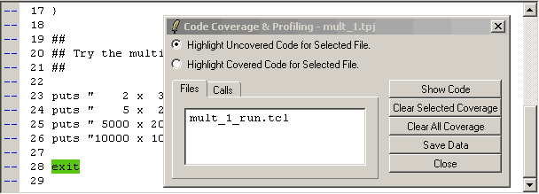
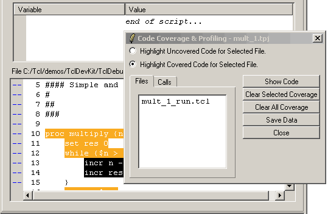
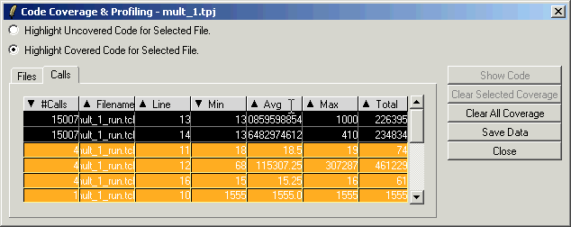
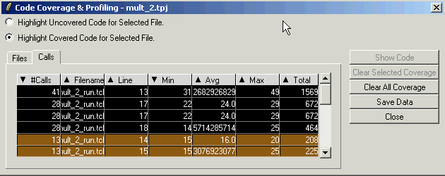

This tutorial shows how to use the Tcl Dev Kit Debugger with profiling to analyze the efficiency of your code. When the "Profiling" option is selected in the Project Settings, the Tcl Dev Kit Debugger will generate additional data about the time required to execute individual commands. The sample projects use integer multiplication as implemented in Tcl. While you would probably never implement multiplication in a scripting language, this example demonstrates how the choice of algorithm affects the performance of an operation.
/demos/TclDevKit/TclDebugger/Profiling/ beneath the root Tcl Dev Kit
installation directory, and run:
tcldebugger mult_1.tpj
The Tcl Dev Kit Debugger will open and load the mult_1
project. The file mult_1_run.tcl will open in the Code display
portion of the debugger's main window.
Run the application in the debugger as usual. You can watch variables, use the eval console, and perform all other debugging tasks while coverage information is being gathered in the background.
As the debugger executes lines in the application, lines that have not been executed will be displayed with a yellow background.
When the script has finished running, select View | Code Coverage, or click the Coverage button on the toolbar. The Code Coverage and Profiling dialog will be displayed.
Use the radio buttons at the top of the dialog to switch between the highlighting modes. In Step Two, we discussed highlighting uncovered code. In this step, we'll look at highlighting covered code.
To view qualitative profiling information, select Highlight Covered Code for Selected File. Now, executed commands are colored in orange and black. The darker the color, the greater the number of times the command was executed.
Notice that lines 13 and 14 have a black background. These lines have been executed the most often. These two lines make up the main loop of the multiplication command and, together, are the "hotspot" - that is, the part of the application that must be optimized to improve performance.
A complex application might have several hotspots scattered over multiple files, making this type of visual inspection tedious. To make this easy, in the Code Coverage and Profiling dialog, select the Calls tab. (The default tab, Files, shows a list of files for which profiling information was collected.)
The Calls tab displays a list of all the lines in the program that have been executed. The list contains the line number, the file in which the line is located, and the number of calls made to the line. In addition, the Calls tab displays the minimum, average, maximum, and total time spent to execute a particular command. Times are shown in microseconds. By default, the list is sorted by the number of calls, so that the most frequently executed lines are displayed at the top.
If you were working with a large file, you could click on a line in the list and then click the Show Code button to position the code display in the debugger to the selected file and line.
In our example, we see that the commands on lines 13 and 14 were called a whopping 15007 times, and used 212,705 and 229,367 microseconds of processing time, respectively.
Think about the algorithms used in the hotspots that were highlighted by the debugger in the previous step. In the real world, you might think about moving this part from a Tcl implementation to one based upon C. However, it is also possible to use a different algorithm to make the calculation more efficient.
The second tutorial project contains a program that rewrites the multiplication loop to use a halving/doubling algorithm, instead of linearly incrementing the result.
Select File | Close Project to close the first project,
then select File | Open Project to load the mult_2.tpj
project. The mult_2_run.tcl file will open in the Code display
portion of the debugger's main window.
Run the program to the end, then open the Code Coverage and Profiling dialog, select Highlight Covered Code..., and click the Calls tab.
While the multiplication loop still contains commands that are called most often, the absolute numbers are drastically reduced, a direct result of choosing a superior algorithm. The highest number of calls on a line is now 41 instead of 15007, and the total processing time has been reduced to 1,465 microseconds. This occurs in the command that decides between incremental and halving steps. We also see that the halving step is called more often than the incremental step (about twice as often in fact). This is not surprising considering that it is this step that reduces the overall number of iterations through the loop.
You can use the Save Data button in the Code Coverage and Profiling dialog to export coverage information in a standard format for post-processing with external tools like Excel, statistics applications, etc. Clicking this button writes the current profiling information in CSV format to a file.
The generated file contains the following columns:
Look at the first row in the Excel spreadsheet pictured above. The command on line 13 of "mult_1_run.tcl" was called 15007 times. The first character of the command is the 129th character in the file (counting EOL as one character), and the command consists of 10 characters.
You can view profiling information for both of the tutorial projects in the files "mult_1.csv" and "mult_2.csv", located in the same directory as the tutorial files.